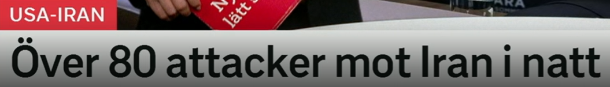
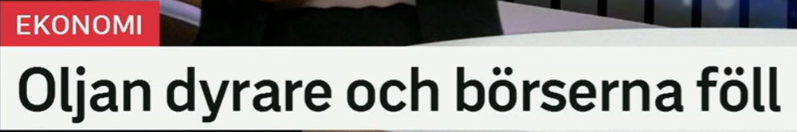
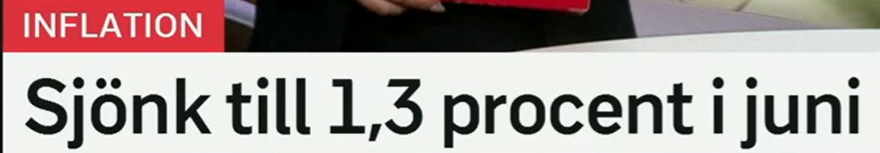
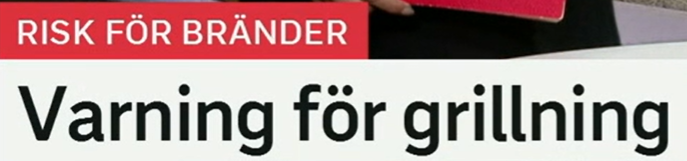
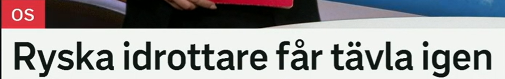
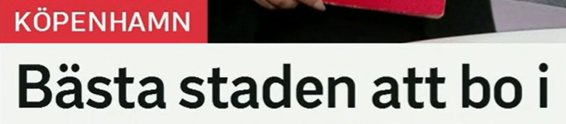

标题总览
Snipaste_2026-07-08_20-23-22.png
Snipaste_2026-07-08_20-29-16.png
Snipaste_2026-07-08_20-29-36.png
Snipaste_2026-07-08_20-30-03.png
Snipaste_2026-07-08_20-30-24.png
Snipaste_2026-07-08_20-30-52.png

Över 80 attacker mot Iran i natt
夜间针对伊朗的袭击超过 80 次。
标题给出数量下限、目标和时段，但没有给出袭击方、方式或后果。
över + 数字
含义：超过、多于
近义：mer än
反义：under, färre än
搭配：över 80 attacker
i natt · 时间副词
含义：今晚/昨夜，具体取决于说话时间
相关：i går kväll, i morse, i kväll
搭配：hände i natt
提醒：新闻发布时间决定中文时态。
Över 80 attacker rapporterades. 据报道有超过 80 次袭击。
Händelsen inträffade i natt. 事件发生在夜间。

Oljan dyrare och börserna föll
石油价格上涨，股市下跌。
前半句省略 blev；后半句用 föll。两个并列分句形成“涨—跌”对照。
dyrare · 比较级
原级：dyr；比较级 dyrare；最高级 dyrast
近义：högre pris
反义：billigare
搭配：oljan blir dyrare
börs / falla
börs：en börs–börsen–börser–börserna
falla：faller–föll–fallit
近义：aktiemarknad；sjunka
反义：börsen stiger
Oljan blev dyrare. 石油价格上涨了。
Börserna föll kraftigt. 各股市大幅下跌。

Sjönk till 1,3 procent i juni
六月降至 1.3%。
主语由栏目 Inflation 补足。till 引出变化后的终点数值。
sjunka till
词形：sjunker–sjönk–sjunkit
含义：下降到
近义：falla till, minska till
反义：stiga till
procent · ett-名词
写法：1,3 procent，瑞典语小数用逗号
搭配：öka med / stiga till 2 procent
辨析：med 表变化量；till 表最终值
相关：procentenhet 百分点
Inflationen sjönk till 1,3 procent. 通胀率降至 1.3%。
Priset minskade med tio procent. 价格下降了 10%。

Varning för grillning
关于烧烤用火的警告。
栏目说明存在火灾风险；varning 不等于全面禁令，标题也没有写具体限制。
varning för
varning：en varning–varningen–varningar
动词：varna för något
近义：uppmaning till försiktighet
搭配：utfärda en varning
grillning · en-名词
词族：grilla–grillar–grillade–grillat
含义：烧烤这一活动
相关：grillförbud 烧烤禁令
搭配：risk vid grillning
Myndigheten varnar för brandrisk. 当局警告有火灾风险。
Var försiktig vid grillning. 烧烤时请小心。

Ryska idrottare får tävla igen
俄罗斯运动员获准再次参赛。
får 在这里表示“被允许”，不是“得到”；标题未写明许可条件或赛事范围。
få + 动词原形
词形：får–fick–fått
标题义：获准做某事
近义：ha tillåtelse att
反义：inte få, förbjudas att
tävla · 动词
词形：tävlar–tävlade–tävlat
名词：en tävling；en idrottare
搭配：tävla i/mot/om
igen：再次；近义 på nytt
Idrottarna får tävla igen. 运动员获准再次参赛。
Hon tävlar i simning. 她参加游泳比赛。

Bästa staden att bo i
最适合居住的城市。
i 留在短语末尾，因为所指地点 staden 已经提前；这是自然且高频的瑞典语结构。
bäst / bästa
原级：bra；比较级 bättre；最高级 bäst
定形式：den bästa staden
反义：dålig–sämre–sämst
搭配：bäst i test, det bästa valet
att bo i
bo：bor–bodde–bott
结构：en stad att bo i
近义：en stad där man kan bo
搭配：bo i en stad, bo kvar
Det är en bra stad att bo i. 这是一座适合居住的城市。
Hon har bott där i fem år. 她在那里住了五年。
重点词表、标题规律与自测
| 词汇 | 中文 | 搭配 | 近义/反义 |
|---|---|---|---|
| i natt | 今晚/昨夜 | hände i natt | i går kväll |
| dyrare | 更贵 | bli dyrare | högre pris / billigare |
| börs | 证券交易所、股市 | börsen faller | aktiemarknad |
| sjunka till | 下降到 | sjunka till 1,3 procent | falla till / stiga till |
| varning för | 对……的警告 | varna för brandrisk | larm om |
| få tävla | 获准参赛 | får tävla igen | tillåtas / förbjudas |
| bästa | 最好的（定形式） | den bästa staden | bäst / sämsta |
| bo | 居住 | bo i, bo kvar | vara bosatt |
经济涨跌
bli dyrare 变贵；börsen faller 股市下跌；sjunka till 降到某终点。
栏目补主语
Sjönk till … 的主语来自栏目 Inflation，完整学习句可补为 Inflationen sjönk …。
填空
1. Inflationen sjönk ___ 1,3 procent.
2. De får ___ igen.
3. Börserna ___.
答案
1. till 2. tävla 3. föll
翻译
“价格上涨了”和“适合居住的城市”。
参考答案
Priserna steg / Det blev dyrare；en stad att bo i